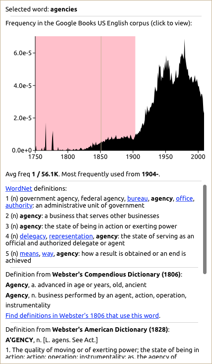

The Distance Machine is a new way of visualizing the linguistic changes that we have to grapple with while reading texts from the past. It uses a statistical model to determine when words either became common or ceased to be common in several large collections of books, including Google's Ngrams data and the publicly available part of the Early English Books Online collection. This gives an approximate sense of when archaic words like thou cease to appear in these collections and when distinctively modern words—like computer—come into common use. Using this information, it shows you (right in your Web browser) which words in a text might have stood out as unusual, novel, or specialized to readers encountering it at a given point in the past.
Things get really interesting when we look at texts from hundreds of years ago. This is a paragraph from Herman Melville's Moby-Dick, which was first published in 1851. The red highlighting indicates words that are not yet common in books in the year displayed at the top; yellow means that the word was more common in both earlier and later periods. When you play the video, you'll see the year change from 1800 to 2014. As we get closer to the present, you will begin to see blue highlights indicating words that have fallen out of common use.
Moving through the years like this can give us a vivid sense of the way the changing nature of the language in which a text is written. It also reveals the fact that these changes are not entirely linear—almost every text, it seems, contains some words that had either lost their currency or not yet caught on at the time it was published.
Understanding what is going on with the individual words that are highlighted requires some thought. You might notice that Melville uses the word agencies, which does not become common until the twentieth century. But while the most common usage today refers to a governmental organization, Melville uses the word to refer to things that influence a person's character—a complexity that we cannot understand merely by comparing word frequencies.
To make it easier to start thinking about problems like this, the Distance Machine allows you to quickly view further information about a word by double-clicking on it, including definitions from WordNet and from a collection of nineteenth- and early twentieth-century dictionaries. Double-clicking on the word agencies shows you this:

You can see what words people have looked at recently on our recent searches page.
This is only a starting point for serious research, but I hope that it will a useful platform for thinking critically about the history of language.